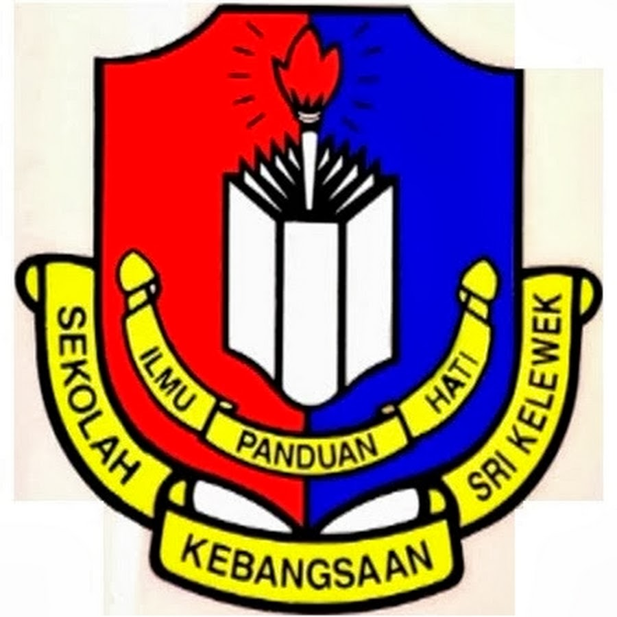
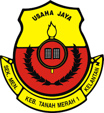
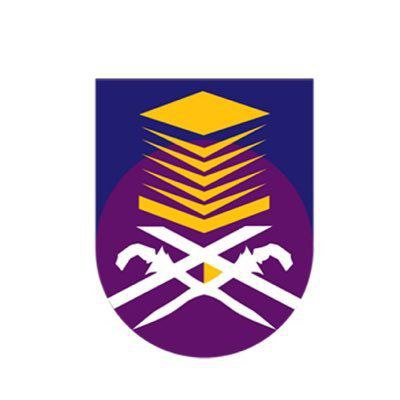

|  | My preschool and primary school was in Sekolah Kebangsaan Sri Kelewek from 2007 until 2013. For my UPSR examination, I got 5As |
|  | I continue my secondary school at Sekolah Menengah Kebangsaan Tanah Merah 1 from 2014 until 2018. When I was form 3, I got 10As and 1B in my PT3 examination. Then, when I was form 5, I got 4As, 4Bs and 1C for my SPM examination. |
|  | After that, I start my diploma at Universiti Teknologi Mara (UiTM) Kelantan Branch, Campus Machang for Diploma in Information Management for 2 years and half. |
| After that, I further my degree at Universiti Teknologi Mara (UiTM) Selangor Branch, Campus Puncak Perdana in Bachelor of Information Science (Hons.) Record Management for 2 years and half also. |
© COPYRIGHT SITI NUR ATIKA BINTI SHAHARI 2022